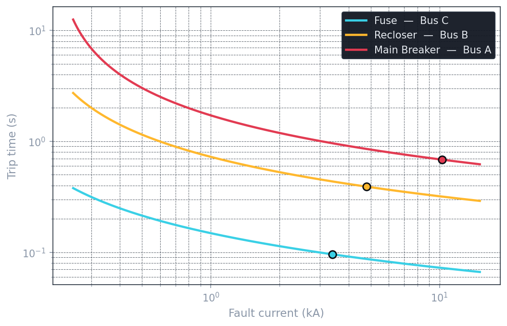

Distribution Feeder Protection Study
The three analyses a protection engineer delivers for a distribution feeder — short-circuit, protective device coordination, and arc-flash hazard — carried out on a modeled 12.47 kV feeder, implemented from the governing equations in Python.
Protective device coordination and arc-flash studies are among the first tasks handed to a junior protection engineer, and they appear on nearly every P&C job posting. This study performs all three core analyses directly from the underlying standards — the IDMT trip characteristic and the incident-energy model implemented in code rather than driven through a GUI — to demonstrate an understanding of what the analysis software computes, not just how to operate it.
A 12.47 kV feeder with a three-device protection hierarchy: a main breaker at the substation, a recloser on the main line, and a fuse protecting a lateral tap. Each device sits at its own bus, so the fault current at that device's location can be computed and used to set its protection.
- Short-circuit (IEC 60909). Maximum three-phase fault current at every bus. Current is highest near the source and falls down the feeder as line impedance accumulates — the physical basis for time-graded coordination.
- Coordination (IEC 60255). Each device gets an inverse-time characteristic with a staggered time-multiplier, so for any fault the nearest device trips first while upstream devices hold back as backup. Verified against a ~0.3 s coordination time interval (CTI).
- Arc-flash (IEEE 1584 / NFPA 70E). Using each device's clearing time, incident energy is estimated and mapped to an NFPA 70E PPE category. Because energy scales with arc duration, faster clearing means lower hazard — so the coordination design directly determines worker safety.
Every device follows the IEC 60255 standard-inverse characteristic, with pickup set above load and the time multiplier staggered to grade the devices in time:
def trip_time(I_fault, I_pickup, TMS, k=0.14, a=0.02):
# IEC 60255 standard-inverse IDMT trip time (seconds)
M = I_fault / I_pickup # multiple of pickup
return TMS * (k / (M**a - 1))Plotting all three device curves across the full fault-current range shows them cleanly stacked and separated — fuse fastest, breaker slowest — never touching, which is the proof of coordination. The marker on each curve is where that device actually clears its own bus fault.

Reading the coordination at a fault on the lateral (Bus C, 3.39 kA), each upstream device holds back from the one below it by more than the 0.3 s CTI — so only the faulted section is de-energized:
| Device | Trips at | Gap to next device | Role |
|---|---|---|---|
| Fuse (Bus C) | 0.10 s | — | Primary — clears first |
| Recloser (Bus B) | 0.44 s | +0.34 s | Backup |
| Main Breaker (Bus A) | 0.96 s | +0.53 s | Backup of last resort |
Applying the IEEE 1584 incident-energy model with each device's clearing time gives the hazard and required PPE at every location. The full study — fault current, clearing device, clearing time, incident energy, and PPE category:
| Location | Fault current | Clearing device | Clearing time | Incident energy | PPE |
|---|---|---|---|---|---|
| Bus A | 10.28 kA | Main breaker | 0.68 s | 3.06 cal/cm² | 1 |
| Bus B | 4.79 kA | Recloser | 0.39 s | 0.81 cal/cm² | 0 |
| Bus C | 3.39 kA | Fuse | 0.10 s | 0.14 cal/cm² | 0 |
The key insight: the fuse's fast operation delivers two payoffs from one coordination decision — selectivity (only the faulted lateral drops) and safety (far lower arc-flash energy). Where the breaker clears the highest fault it also produces the highest incident energy, because energy scales with arc duration.
Note: the arc-flash calculation uses a simplified incident-energy model that captures the governing drivers — arcing current, arc duration, working distance — and produces realistic magnitudes. It demonstrates the IEEE 1584 method; it is not a certified arc-flash study.
The complete Jupyter notebook — network model, short-circuit analysis, coordination, TCC plot, and arc-flash calculation, runnable top to bottom — plus the results CSV are in the repository.